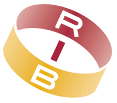

Assistenza IT
Diagnosi, troubleshooting, configurazioni, migrazioni, supporto utenti e risoluzione dei problemi che bloccano il lavoro quotidiano.
Consulenza IT • Infrastrutture • AI
Ho costruito una carriera tecnica e due attività mie: una di consulenza IT e un negozio di orologi vintage. Gestisco la tua realtà con la stessa attenzione con cui gestisco la mia: costi, utilità, sostenibilità e scelte che reggono anche dopo l'intervento.
Profilo
Sono uno specialista IT con circa 7 anni di esperienza nella gestione di infrastrutture aziendali, system administration, sicurezza informatica, disaster recovery e project management. Ho seguito, insieme a un collega, un ambiente multi-sede abbastanza ampio da obbligarmi a ragionare su affidabilità, priorità, documentazione, continuità e costi. Nel 2025 ho avviato due attività in proprio: la consulenza IT e TomVintageCollection.
Nel tempo ho imparato a non separare la parte tecnica da quella economica: una soluzione funziona davvero quando risolve il problema, costa il giusto, non crea dipendenze inutili e può essere mantenuta. Aver creato e gestire attività mie mi aiuta a capire budget, tempi, margini e compromessi anche dal lato di chi mi chiama.
Servizi
Diagnosi, troubleshooting, configurazioni, migrazioni, supporto utenti e risoluzione dei problemi che bloccano il lavoro quotidiano.
Scelta, acquisto, installazione e preparazione di PC, notebook, periferiche, networking e postazioni di lavoro.
Upgrade, manutenzione, reinstallazioni, ottimizzazione sistemi, backup e migrazioni con attenzione a impatto, costo e continuità.
Gestionali interni, utility e applicazioni su misura quando il software standard non basta o costringe l'azienda ad adattarsi male.
Automazione di attività ripetitive, integrazioni software, chatbot e sistemi RAG sui documenti aziendali, dove portano un vantaggio concreto.
Analisi esigenze, scelta strumenti, fornitori, architetture e priorità seguendo la soluzione migliore, non quella più comoda da vendere.
Quando chiamarmi
Mi interessano i punti in cui la tecnologia smette di essere solo supporto e diventa una scelta di gestione: quando conviene sviluppare, quando conviene comprare, quando conviene semplificare e quando invece vale la pena costruire qualcosa di più robusto.
Lavoro in presenza in Emilia-Romagna e da remoto ovunque. Si parte da una chiamata conoscitiva per capire il problema; poi propongo un intervento puntuale o una collaborazione continuativa, a seconda di cosa serve davvero.
Esperienza lavorativa

Cliente
Sviluppo di soluzioni AI a supporto dei processi interni: RAG, chatbot, embedding, reranking, integrazioni software, automazioni e gestione dei dati.
Cliente / contesto confidenziale
Sviluppo di soluzioni AI, automazioni e integrazioni software a supporto di processi interni, mantenendo riservati dettagli e committente.
Cesena
Consulenza IT per privati e aziende: manutenzione sistemi, sviluppo software e automazioni. In parallelo ho avviato e gestisco TomVintageCollection, attività di compravendita di orologi vintage (vedi progetti).
Cesena
Gestione dell'infrastruttura IT aziendale in un team di due persone: oltre 100 utenti, circa 15 macchine virtuali e 5 sedi operative. Sicurezza informatica, backup e disaster recovery, formazione utenti, miglioramento processi, project planning, scripting e sviluppo software interno.
Milano / Rimini
Formazione e attività tecnica su ambiente Microsoft Dynamics 365, con esperienza legata a progetti cliente e processi gestionali aziendali.
Cesena
Alternanza scuola-lavoro: programmazione software per una centralina di elicottero, troubleshooting, database, documentazione tecnica e supporto hardware.
Competenze
System administration, networking, server, VM, switch, Wi-Fi, sicurezza, backup e disaster recovery. Certificazione Cisco CCNA.
Sviluppo software, RAG, chatbot, embedding e reranking, automazioni, scripting, database e integrazioni.
Pianificazione, gestione budget/acquisti, coordinamento attività, fornitori, sedi operative e miglioramento processi.
Analisi costi-benefici, attenzione al budget, scelta fornitori, riduzione sprechi e sostenibilità reale delle soluzioni.
Avvio e gestione di un'attività: pricing, canali di vendita, brand e relazione con i clienti.
Traduzione dei problemi tecnici in decisioni chiare, formazione utenti, documentazione e confronto con fornitori e clienti.
Progetti
Pianificazione e gestione completa dell'infrastruttura IT: acquisti, server, switch, Wi-Fi, videosorveglianza, luci e setup operativo. Scelte tecniche valutate anche sul piano economico, con un risparmio stimato di 100.000€ rispetto a fornitori esterni.
Strumenti per compravendita orologi, consulenza IT e attività operative: trasformano processi in dati, storico decisionale e margini leggibili, senza dipendere da memoria, file sparsi o passaggi manuali.
Negozio e attività attorno agli orologi vintage: selezione prodotto, pricing, canali di vendita online e in negozio, rapporto con i clienti e posizionamento del brand.
Visita TomVintageCollectionProgettazione, assemblaggio e configurazione di rig per mining Ethereum, ottimizzazione consumi/prestazioni e troubleshooting hardware/software.
Formazione
Cesena, 2013–2018
Reti, sistemistica e gestione apparati, 2017–2018
Indirizzo sportivo, Bertinoro, 2019–2021. Utile ogni giorno nell'ascolto dei clienti e nella formazione degli utenti.
Studio costante di nuovi modelli, strumenti e approcci AI, automazioni, sviluppo software e sicurezza, applicati a problemi reali e progetti concreti.
Italiano madrelingua, inglese fluente.
Ex giocatore di cricket in Serie A e Nazionale Under 19. Interessi in economia, psicologia, filosofia, storia e fisica.
Contatti
Scrivimi per confrontarci su consulenza IT, manutenzione sistemi, sviluppo software interno, automazioni o AI. Lavoro in presenza in Emilia-Romagna e da remoto in tutto il mondo.